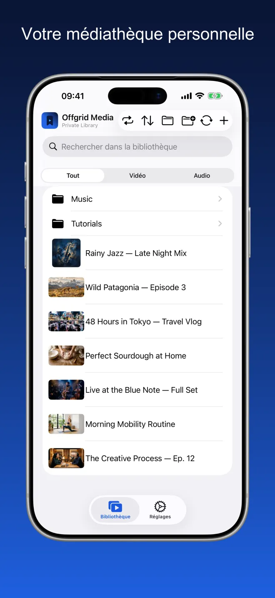
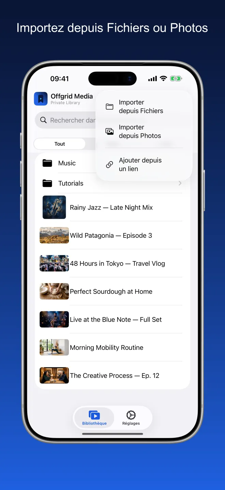
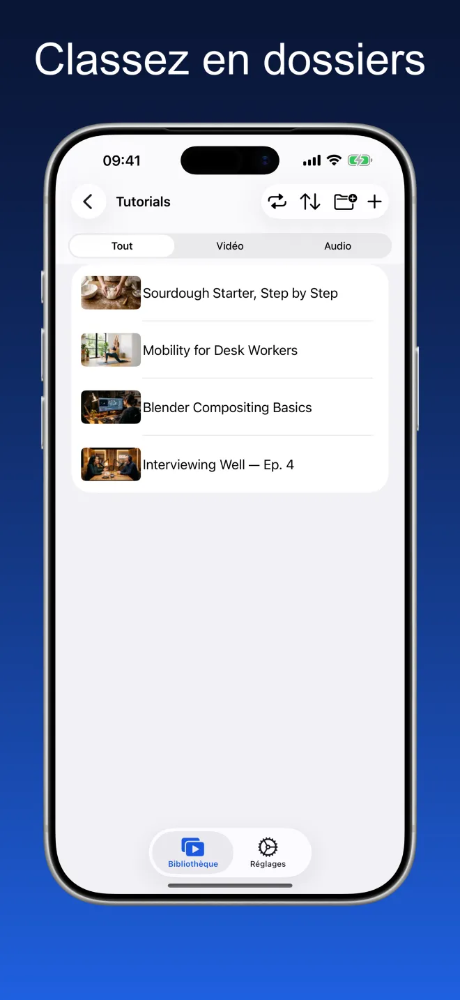
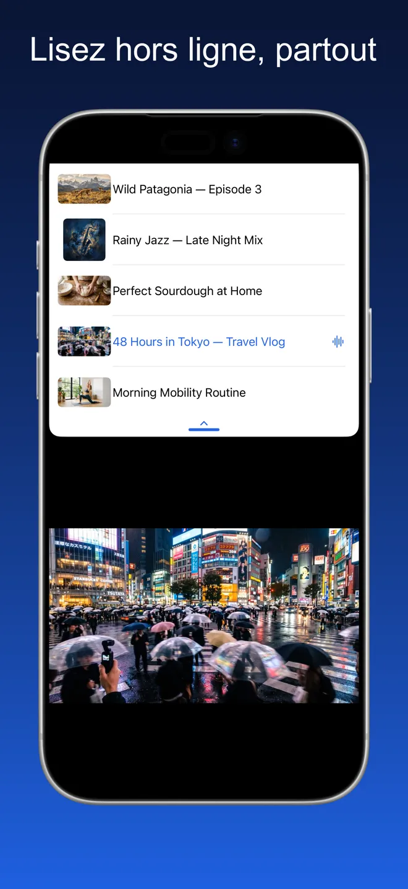
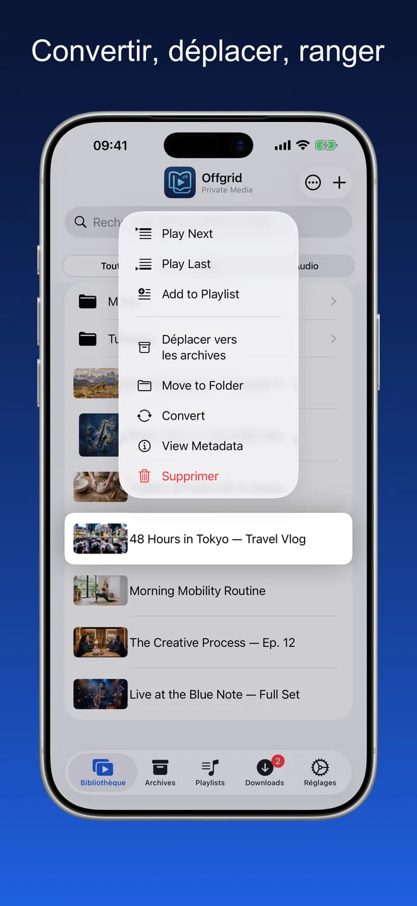
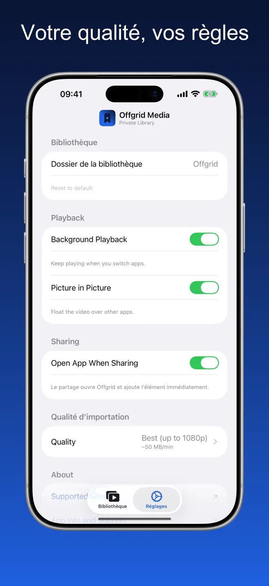

Offgrid Media · Bibliothèque privée
Tout ce que vous gardez,
hors ligne.
Importez les vidéos et les audios que vous avez déjà — depuis Fichiers, depuis Photos ou via un lien que vous avez le droit de conserver — et lisez le tout hors ligne, dans un seul endroit bien rangé.
Essayez. Le réseau est coupé — votre médiathèque continue de jouer.

Un seul endroit bien rangé pour vos médias
Dossiers, recherche et filtre vidéo ou audio. Les vignettes proviennent du fichier lui-même, les pochettes et les métadonnées sont conservées.





Importer, organiser, lire
Importez depuis Fichiers ou Photos
Classez en dossiers
Lisez hors ligne, partout
Un vrai lecteur, pas un dossier de fichiers
Tout ce qui suit fonctionne sans réseau.
Importez depuis Fichiers et Photos
Ajoutez des vidéos et des audios depuis iCloud Drive, depuis votre appareil ou depuis votre photothèque. Tout arrive dans votre bibliothèque, prêt à être lu.
Organisez à votre façon
Créez des dossiers, déplacez vos éléments et effectuez des recherches dans tout ce que vous avez gardé. Filtrez par vidéo ou par audio pour vous concentrer.
Conçu pour le hors ligne
Une fois dans votre bibliothèque, un élément reste sur votre appareil. Aucune mise en mémoire tampon, aucune connexion nécessaire, aucun flux provenant d'ailleurs.
Un vrai lecteur
Lecture dans l'ordre ou aléatoire, reprise là où vous vous étiez arrêté, file d'attente, et Picture in Picture pour continuer à regarder pendant que vous utilisez d'autres apps. Les pochettes et les métadonnées sont conservées.
Audio en arrière-plan
Continuez d'écouter quand vous changez d'app ou verrouillez votre écran.
Choisissez votre qualité
Réglez votre qualité préférée une fois dans les Réglages — la meilleure disponible, 720p, 480p, 360p ou audio seul.
Chapitres
Les médias avec chapitres obtiennent une liste de chapitres dans la médiathèque et une barre de chapitres en bas du lecteur, pour aller droit au passage voulu.
Des dossiers entiers, d'un coup
Importez un dossier et il arrive avec ses sous-dossiers intacts — copiez-le, ou déplacez-le hors de son emplacement d'origine. Sélectionnez plusieurs éléments à la fois pour les ajouter à une playlist, les archiver, les déplacer ou les supprimer.
Uniquement ce que vous utilisez
Désactivez l'Archive ou les Playlists dans les réglages et elles disparaissent de l'app. Rien n'est supprimé — réactivez-les et tout est toujours là.
Aucun compte. Aucune pub. Aucun suivi.
Offgrid conserve tout localement sur votre appareil. Rien n'est téléversé, rien n'est partagé, aucun compte n'est requis.
Rien à collecter, puisqu'il n'y a nulle part où l'envoyer
Offgrid Media n'a ni compte ni serveur. Son manifeste de confidentialité App Store déclare aucun suivi et aucune donnée collectée.
Questions fréquentes
Non. Une fois dans votre médiathèque, un élément réside sur votre appareil et se lit sans réseau. Rien n'est diffusé en streaming à la lecture : aucune mise en mémoire tampon, aucune connexion à perdre.
Dans un dossier sur votre appareil, au sein du stockage de l'app. Vous pouvez choisir un autre dossier dans les Réglages, et comme l'app prend en charge l'app Fichiers, vous pouvez y consulter les mêmes fichiers. Rien n'est téléversé et il n'y a aucune synchronisation cloud.
Import depuis Fichiers (iCloud Drive ou appareil), import depuis votre photothèque, ou ajout via un lien que vous avez le droit de conserver — collez-le dans l'app, ou utilisez le menu Partager de votre navigateur et choisissez Offgrid Media. L'import est la voie principale ; le lien n'est qu'une commodité secondaire.
Oui. Activez l'audio en arrière-plan dans les Réglages : la lecture continue quand vous changez d'app ou verrouillez l'écran, avec titre, pochette et commandes sur l'écran verrouillé et dans le centre de contrôle. La vidéo peut flotter au-dessus des autres apps avec Picture in Picture. La vidéo se lit aussi en plein écran, et sur iPad l'app continue à côté d'une autre app en Split View.
Non. Offgrid Media n'a ni compte, ni serveur, ni analyse, ni SDK tiers. Son manifeste de confidentialité App Store déclare aucun suivi et aucune donnée collectée. La seule autorisation demandée concerne les notifications.
Rien. Pas d'abonnement, pas d'achats intégrés, pas de publicité.
N'ajoutez que du contenu que vous avez le droit de conserver. Le respect des conditions d'utilisation de chaque plateforme et des lois applicables relève de votre seule responsabilité.
Votre médiathèque. Votre appareil. Sans réseau.
Offgrid Media est gratuite, pour iPhone et iPad, en 11 langues.